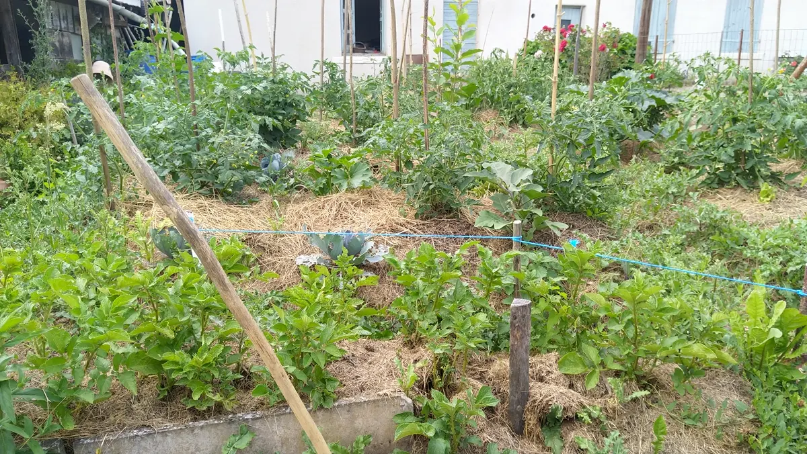
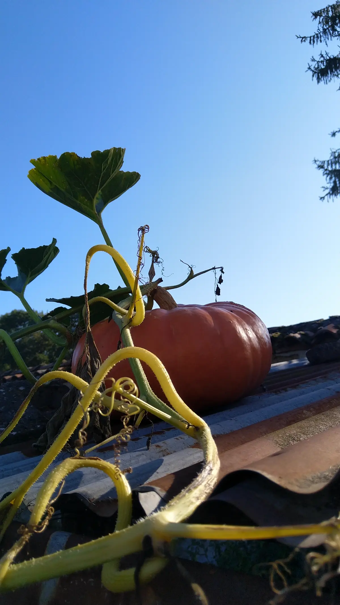
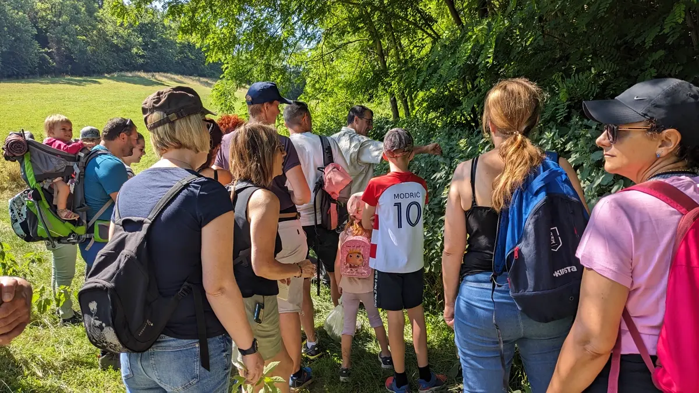
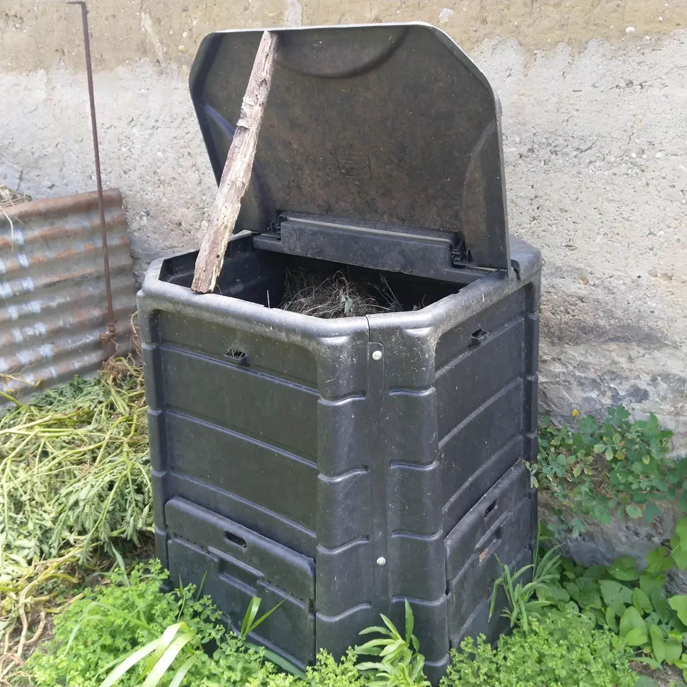
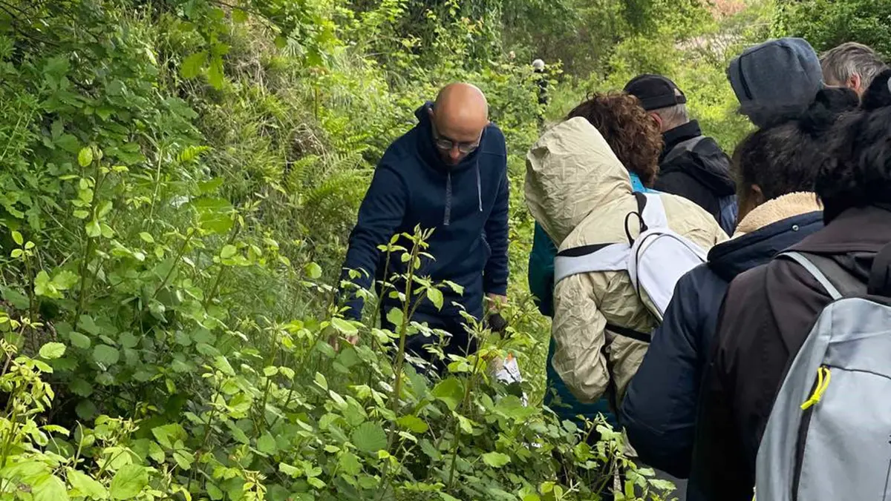
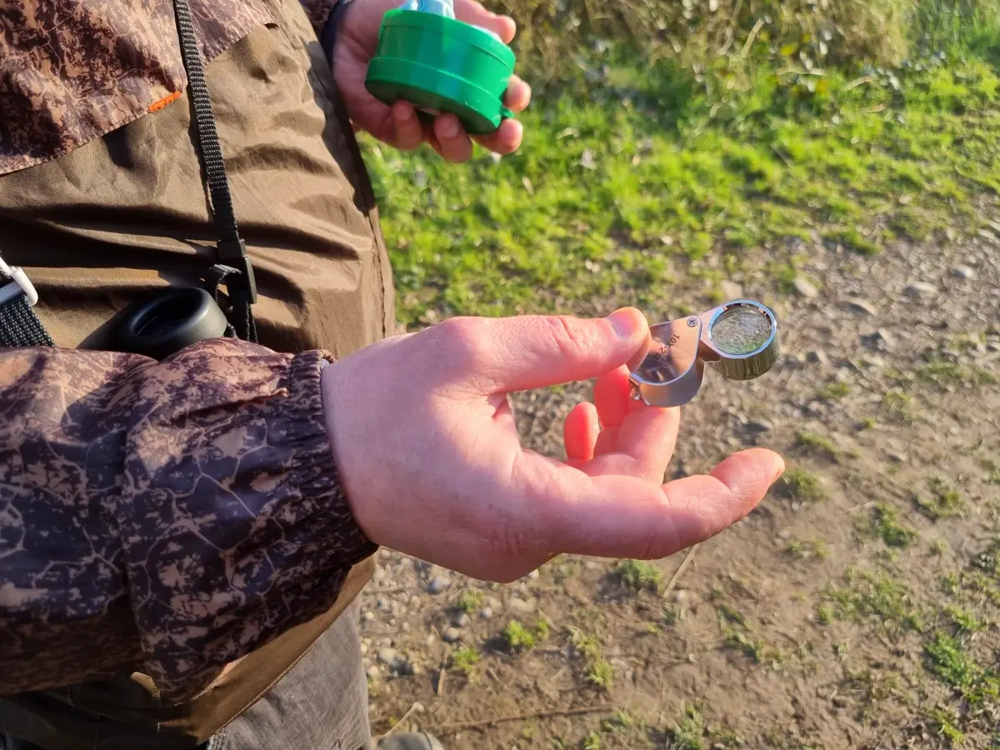
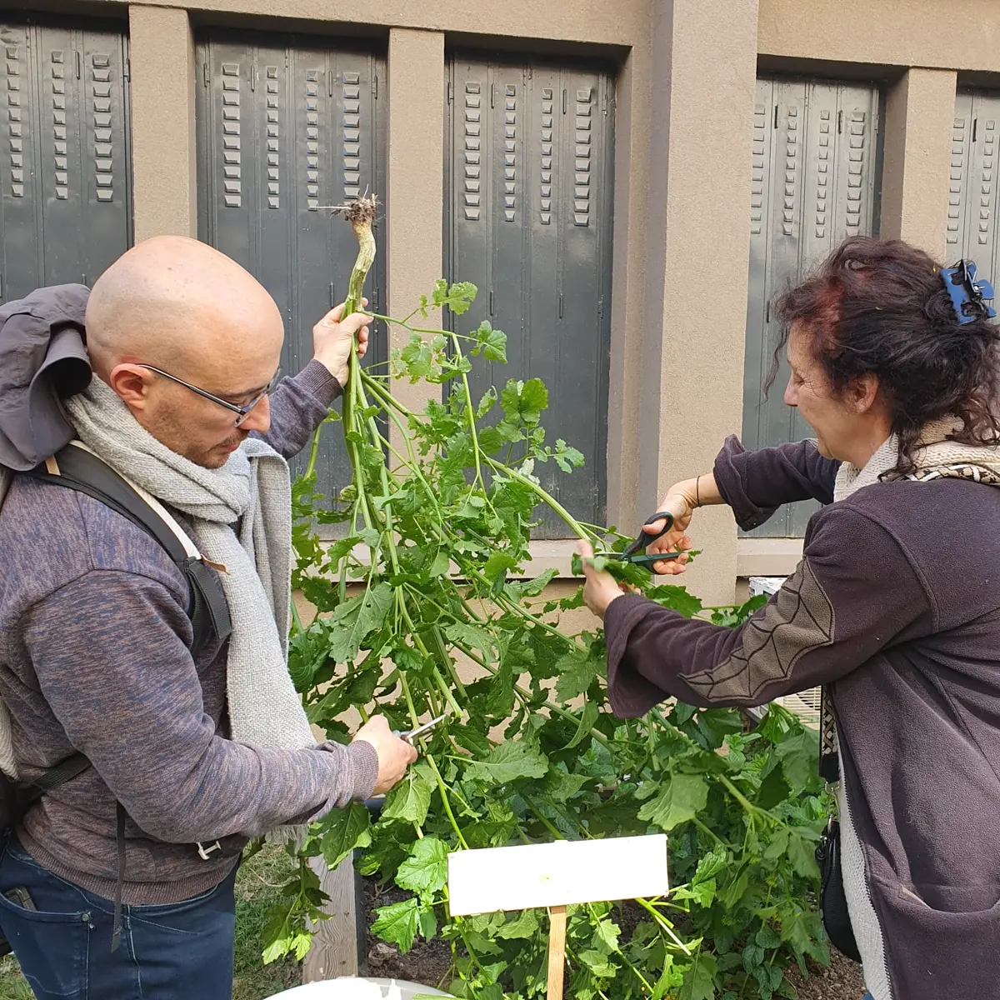
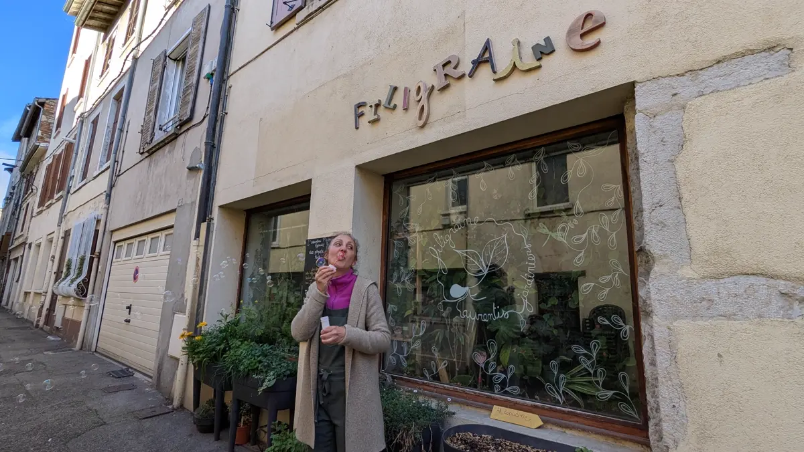

Notre histoire : d'un jardin partagé aux plantes sauvages
L'histoire de Permasauvage est celle d'une graine semée dans une ville au sud de Lyon, qui a grandi au fil des rencontres : un jardin partagé, des plantes sauvages, un castor, une radio libre, et aujourd'hui le nord du Beaujolais.
2019 : un jardin partagé au sud de Lyon
Tout commence sur une terrasse de 8 mètres carrés. Fabrice, créateur du site Le Potager Minimaliste, n'a pas de terrain pour jardiner. Alors il fait de sa terrasse un véritable petit écosystème, avec une mini-serre qui produit, à partir de la graine, une belle quantité de plants de légumes.
Ce qu'il découvre là, il a envie de le partager. En 2019, avec la mairie de sa ville et quelques habitants, il lance un projet de jardin partagé : c'est la naissance de l'association.

Pendant plusieurs saisons, ce jardin devient un lieu d'expérimentation de nouvelles méthodes de jardinage, d'ateliers et de visites. Puis le projet s'estompe et le terrain est rendu à la mairie. Le jardin s'arrête, mais l'élan, lui, continue.

Après le jardin : plantes sauvages, compostage et lien local
L'association poursuit son chemin en œuvrant avec d'autres associations du territoire : balades à la rencontre des plantes sauvages, ateliers de compostage et de jardinage, et mise en valeur d'acteurs locaux.


Elle accompagne aussi de nouveaux jardins partagés en leur transmettant son expérience : des conseils de permaculture pour jardiner plus durablement, et cette idée qui nous tient à cœur : il n'y a pas que les légumes du potager, il y a aussi les plantes sauvages qui nous entourent, dont beaucoup se mangent.

Le castor en Nord-Isère
En parallèle, une autre rencontre change la trajectoire de l'association : le castor, de plus en plus présent en Nord-Isère. Fabrice le piste, repère les lieux où il s'installe, dont un magnifique barrage sur l'Ozon, et commence à en parler autour de lui.
Des sorties s'organisent pour aller observer les sites du castor, notamment à l'île Barlet, du côté de Vienne. L'association participe à signaler sa présence et à sensibiliser à son rôle : un animal qui façonne les rivières et fait revenir la vie. Toujours la même question : que se passe-t-il sur mon territoire, et comment puis-je œuvrer pour lui ?

À Vienne : balades filmées, quartiers et radio libre
Un samedi matin, sur le marché de Vienne, une discussion révèle un besoin : beaucoup d'habitants aimeraient marcher en nature sans partir loin en voiture, mais ne savent pas où aller. Fabrice, qui rejoint la ville à pied par les anciens chemins de campagne, connaît ces itinéraires par cœur.
Il les partage alors en vidéo sur la chaîne YouTube Permasauvage : des balades filmées autour de Vienne, avec les tracés à télécharger, et au passage un regard sur la faune et la flore des lieux traversés. D'autres vidéos parlent du castor, pour réveiller la curiosité et faire comprendre son rôle sur le territoire.
L'association tisse aussi des liens avec d'autres acteurs de Vienne : jardinage avec les enfants dans les centres sociaux, semis et boutures, nature invitée dans les fêtes de quartier, avec la plantation d'un arbre au quartier de l'Isle, et des formats sensibles comme la marche du temps profond.

De ces rencontres naît une radio libre, animée chaque mercredi soir avec Sophie de l'association Filigraine et Romain de la chaîne Raconte-moi, fin connaisseur de l'histoire de la ville : les actualités locales, une plante sauvage mise à l'honneur à chaque émission, les arbres de la ville, et d'anciennes photos pour regarder comment les lieux ont changé.

2025 : le chemin continue dans le Beaujolais
En 2025, l'association s'installe avec Fabrice dans le nord du Beaujolais. L'esprit reste le même : renouer avec le vivant, relier les personnes et les acteurs du territoire, et laisser émerger des envies d'agir : sorties, projections, actions autour du castor de l'Ardière et projets menés avec d'autres associations locales.
L'histoire continue de s'écrire, et vous pouvez en faire partie.